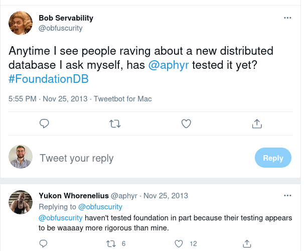

The FoundationDB's Book 📖
Welcome to FoundationDB's Book! If you are looking to start writing your own datastore with FoundationDB, or if you are curious about FDB, you have come to the right place.
🚧 This is currently a work-in-progress, feel free to contribute chapters! 🚧
What This Book Covers
This book aims to be a comprehensive, up-to-date guide to use FoundationDB features and libraries, appropriate for beginners and old hands alike.
It is designed as an entrypoint towards the FoundationDB's community, with links pointing to the official documentation or the forum.
- The early chapters provide an introduction to FoundationDB, why it may interest you, and what is a layer.
- The Record-Layer chapter is focusing on the Record-Layer, a Java library to write layers made by Apple.
- The middle chapters discuss key utilities and features provided by the bindings, and describe best-practises to write layers to maximize performance and scalability.
- The last chapters are describing core elements of FoundationDB, such as read/write path, or the simulation framework.
Yet another database?
- How to choose a database?
- Stateless applications
- Datastore's architecture
- Sharing the storage engine 🤔
- Requirements for such a storage engine
Another database? There is so many of them 😑
You are right, we are living in the golden age of data, and as such, we have many options to store our data.
According to the Database of Databases, you can choose between 795 database management systems. Yes, you read it right, almost 800 different databases to compare 😱
How to choose a database?
If you click on the Browse button, you will be able to go through the different criteria:
- is it open-source or not?
- is it an embedded/single-node/distributed database?
- What is the query language?
- is it suited for OTLP or OLAP workloads?
- What is the data model?
- What is the scalability limits?
- Is it transactional?
- Is there indexes?
- Is it a row-oriented storage, or maybe columnar?
- is there stored procedures and materialized views?
- and so on.
That's a lot of criteria! But that means we also have a big number of possible combinations, each one creating a potential new database. This is why we have specialized datastores like:
- document
- column
- key-value
- graph
- indexing
- messaging
- and others!
Stateless applications
This variety of specialized datastore is allowing developers to have multiple datastores as requirements for a single infrastructure.
Alice: "Hey Bob, what do you need for your next project?"
Bob: "Mmmmh, I will need an SQL database and a messaging systems 🤔".
Storing data is hard, so we are using them as durable strongholds for our data, while making our applications mostly stateless.
So, Bob's architecture looks like this:
flowchart TD
id1(Bob's stateless applications)
id2(datastore 1)
id3(datastore 2)
id1 -- uses --> id2
id1 -- uses --> id3
Datastore's architecture
We said earlier that there is a lot of criteria to choose a database, but we can narrow to 3:
- What is the Query language,
- What is the data model,
- What is the Storage Engine.
For example, PostgreSQL is exposing relational data through the SQL language and storing files on a single node.
Let's update the flowchart:
flowchart TD
id1(Bob's stateless applications)
ql1(Query Language 1)
ql2(Query Language 2)
dm1(Data Model 1)
dm2(Data Model 2)
se1(Storage Engine 1)
se2(Storage Engine 2)
id1 -- uses --> ql1
ql1 -- to access data as --> dm1
dm1 -- which are stored in --> se1
id1 -- uses --> ql2
ql2 -- to access data as --> dm2
dm2 -- which are stored in --> se2
Document databases, column-oriented, row-oriented, JSON, key-value, etc. all make sense in the right context, and often different parts of an application call for different choices. That means we cannot mutualize the Query language and the data models. What's left is the storage engine.
Sharing the storage engine 🤔
Let's mutualize the storage Engine!
flowchart TD
id1(Bob's stateless applications)
ql1(Query Language 1)
ql2(Query Language 2)
dm1(Data Model 1)
dm2(Data Model 2)
se(Shared storage Engine)
id1 -- uses --> ql1
ql1 -- to access data as --> dm1
dm1 -- which are stored in --> se
id1 -- uses --> ql2
ql2 -- to access data as --> dm2
dm2 -- which are stored in --> se
This design has some great advantages:
- the storage engine only need to focus on storage,
- any components above the storage Engine has become stateless.
That could work, but if we have put a lot of contraints on the storage engine, let's talk about what we require.
Requirements for such a storage engine
So, we know have a storage engines that needs to handle multiple types of data. To be cloud-Native, the storage engine needs to be:
- fault tolerant,
- scalable,
- highly available.
while providing:
- strong semantics,
- flexible data models.
Now the question is: can we design such a storage engine? The answer is yes, and it is called FoundationDB.
Enter FoundationDB
- FoundationDB as a database
- FoundationDB as a database-framework
- A brief history of FoundationDB
- Who is using FoundationDB?
- TL;DR
Let's start by quoting the official overview:
FoundationDB is a distributed database designed to handle large volumes of structured data across clusters of commodity servers. It organizes data as an ordered key-value store and employs ACID transactions for all operations. It is especially well-suited for read/write workloads but also has excellent performance for write-intensive workloads.
FoundationDB is an open-source(Apache V2), distributed key-value store written in Flow, an async-first language that targets C++ specially developed for the database.
Like all key-value stores, it looks like an infinite dictionary/map from programming, allowing you to store key and values in bytes.
Keys are lexicographic order, which means:
'0'is sorted before'1''apple'is sorted before'banana''apple'is sorted before'apple123'- keys starting with
'mytable\'are sorted together (e.g.'mytable\row1','mytable\row2', ...)
One huge advantage of FDB is that it supports multi-key strictly serializable transactions. Let's break-down the words in reverse order:
- transactions: All reads and writes in FoundationDB are accomplished using transactions. These transactions are fully ACID (Atomic, Consistent, Isolated, and Durable) and span across multiple machines with high performance.
- Serializable: this means that the outcome of concurrent transaction is equal to a serial execution.
- Strictly: transactions are strictly ordered
- Multi-key: you can write across regions/shards
The full list of features is available here, and you will also finds a anti-features list.
FoundationDB as a database
FoundationDB provides amazing performance on commodity hardware, allowing you to support very heavy loads at low cost. The official performance page is giving us some insights:

Here, a cluster of commodity hardware scales to 8.2 million operations/sec doing a 90% read and 10% write workload with 16 byte keys and values between 8 and 100 bytes.
You can expect sub-millisecond performance for small reads, without any tuning.
Beside having huge performance, FoundationDB is easy to install, grow, manage and fault tolerant. It has been running in production for years in companies like Apple or Snowflake. Backing FoundationDB up is an unmatched testing system based on a deterministic simulation engine that will be described later in the book.
FoundationDB as a database-framework
For developers, FoundationDB can be seen as a database-framework: it decouples its data storage technology from its data model, allowing you to write "layers": stateless applications that will use FoundationDB as their storage.
flowchart TD
fdb(FoundationDB)
l1(Layer 1)
l2(Layer 2)
ln(Layer N)
l1 -- uses --> fdb
l2 -- uses --> fdb
ln -- uses --> fdb
Each layer can expose high level data models. They can be developed as libraries or stateless services. And because of FDB performance, they are easy to scale.
A brief history of FoundationDB
FoundationDB started first as a company in 2009. The FoundationDB Alpha program began in January 2012 and concluded on March 4, 2013 with their public Beta release.
Their 1.0 version was released for general availability on August 20, 2013. On March 24, 2015 it was reported that Apple has acquired the company.
On April 19, 2018, Apple open sourced the software, releasing it under the Apache 2.0 license.
Who is using FoundationDB?
Many companies are using FDB, including:
- Apple iCloud: they are the largest users. Billions of logical databases are stored in FDB (one per user per application). You will find more details about this on the Record-layer chapter.
- Snowflake is storing all their metadatas in FDB,
- VMWare Tanzu (Formerly Wavefront),
- IBM (Apache CouchDB),
- eBay,
- Epic Games,
- ...
TL;DR
FoundationDB is a scalable, robust, distributed key-value store that you can use as a framework to write your own database layer 🤯
Everything is a key-value!
Ok, so I could store a table-like data in a key-value?
Yes, this is exactly the idea. It may seem weird at first, but it is a common pattern among new databases. In this section, we will briefly go over some examples.
Yugabyte
From the official documentation:
YugabyteDB architecture follows a layered design. It is comprised of 2 logical layers as shown in the diagram below:
Yugabyte Query Layer
DocDB distributed document store
Information about key encoding format can be found here and here.
F1 and Spanner from Google
There is a lot of contents about Google's datastores and their evolution.
At first, they built Megastore on top of BigTable:
In brief, it provides fully serializable ACID semantics over distant replicas with low enough latencies to support interactive applications.
We use Google’s Bigtable for scalable fault-tolerant storage within a single datacenter, allowing us to support arbitrary read and write throughput by spreading operations across multiple rows.
Then, the first version of Spanner appeared:
Spanner is a scalable, globally-distributed database designed, built, and deployed at Google.
Spanner has evolved from a Bigtable-like versioned key-value store into a temporal multi-version database. Data is stored in schematized semi-relational tables; data is versioned, and each version is automatically timestamped with its commit time
Then they added F1 on top of Spanner:
F1 is a fault-tolerant globally-distributed OLTP and OLAP database built at Google as the new storage system for Google’s AdWords system. It was designed to replace a sharded MySQL implementation that was not able to meet our growing scalability and reliability requirements.
F1 is built on top of Spanner
And finally, Spanner itself became an SQL system:
Google’s Spanner started out as a key-value store offering multi-row transactions, external consistency, and transparent failover across datacenters. Over the past 7 years it has evolved into a relational database system
It seems it is still organized as layers:
Like the lower storage and transactional layers,
TiDB / TiKV
In the titanium stack, TiKV is the storage layer for TiDB:
It has three core components: a distributed storage layer, a Placement Driver(PD), and a computation engine layer.
The distributed storage layer consists of a row store (TiKV) and a columnar store (TiFlash). Logically, the data stored in TiKV is an ordered key-value map. Each tuple is mapped into a key-value pair. The key is composed of its table ID and row ID, and the value is the actual row data, where the table ID and row ID are unique integers
The table codec can be found here.
CosmosDB
More details can be found here:
Cosmos DB supports and projects multiple data models (documents, graphs, key-value, table, etc.) over a minimalist type system and core data model: the atom-record-sequence (ARS) model.
Container and item resources are further projected as reified resource types for a specific type of API interface. For example, while using document-oriented APIs, container and item resources are projected as collection and document resources respectively.
The automatic indexing strategy is described here.
CockroachDB
This old blogpost describes the idea:
The CockroachDB SQL system is built on top of the internal CockroachDB key-value store and leverages the monolithic sorted key-value map to store all of the SQL table data and indexes.
The encoding notes can be found here.
Dgraph
From the official documentation:
Dgraph is a single layer in your tech stack, but inside the inner workings of a Dgraph database instance, there are three distinct entities:
- Badger - Dgraph’s custom-built key-value store
- Ristretto - Dgraph’s custom-built cache
- Dgraph - the methods and algorithms used to parse DQL (and now GraphQL) and act accordingly
Correct and robust, choose both
- Jepsen
- Flow programming language
- Simulation-Driven development
- Cooperating with the simulation framework with Buggify
- Implications for CI
- TL;DR
FoundationDB is famously known in the distributed system's community for the simulation framework they developed, unmatched in the industry. In this section, we will go through why FoundationDB is one of the most robust distributed database available.
Jepsen
First, let's introduce Jepsen:
Jepsen is an effort to improve the safety of distributed databases, queues, consensus systems, etc. We maintain an open source software library for systems testing, as well as blog posts and conference talks exploring particular systems’ failure modes. In each analysis we explore whether the system lives up to its documentation’s claims, file new bugs, and suggest recommendations for operators.
Jepsen pushes vendors to make accurate claims and test their software rigorously, helps users choose databases and queues that fit their needs, and teaches engineers how to evaluate distributed systems correctness for themselves.
Jepsen is now a standard for testing databases, but there is no FoundationDB analysis:

Flow programming language
Let's dive in the testing part of FoundationDB, starting with Flow. let's quote the Engineering page:
FoundationDB began with ambitious goals for both high performance per node and scalability. We knew that to achieve these goals we would face serious engineering challenges that would require tool breakthroughs. We’d need efficient asynchronous communicating processes like in Erlang or the Async in .NET, but we’d also need the raw speed, I/O efficiency, and control of C++. To meet these challenges, we developed several new tools, the most important of which is Flow, a new programming language that brings actor-based concurrency to C++11.
Flow is more of a stateful distributed system framework than an asynchronous library. It takes a number of highly opinionated stances on how the overall distributed system should be written, and isn’t trying to be a widely reusable building block.
Flow adds about 10 keywords to C++11 and is technically a trans-compiler: the Flow compiler reads Flow code and compiles it down to raw C++11, which is then compiled to a native binary with a traditional toolchain.
Flow was developed before FDB, as stated in this 2013's post:
FoundationDB founder here. Flow sounds crazy. What hubris to think that you need a new programming language for your project? Three years later: Best decision we ever made.
We knew this was going to be a long project so we invested heavily in tools at the beginning. The first two weeks of FoundationDB were building this new programming language to give us the speed of C++ with high level tools for actor-model concurrency. But, the real magic is how Flow enables us to use our real code to do deterministic simulations of a cluster in a single thread. We have a white paper upcoming on this.
We've had quite a bit of interest in Flow over the years and I've given several talks on it at meetups/conferences. We've always thought about open-sourcing it... It's not as elegant as some other actor-model languages like Scala or Erlang (see: C++) but it's nice and fast at run-time and really helps productivity vs. writing callbacks, etc.
(Fun fact: We've only ever found two bugs in Flow. After the first, we decided that we never wanted a bug again in our programming language. So, we built a program in Python that generates random Flow code and independently-executes it to validate Flow's behavior. This fuzz tester found one more bug, and we've never found another.)
A very good overview of Flow is available here and some details here.
Simulation-Driven development
One of Flow’s most important job is enabling Simulation:
We wanted FoundationDB to survive failures of machines, networks, disks, clocks, racks, data centers, file systems, etc., so we created a simulation framework closely tied to Flow. By replacing physical interfaces with shims, replacing the main epoll-based run loop with a time-based simulation, and running multiple logical processes as concurrent Flow Actors, Simulation is able to conduct a deterministic simulation of an entire FoundationDB cluster within a single-thread! Even better, we are able to execute this simulation in a deterministic way, enabling us to reproduce problems and add instrumentation ex post facto. This incredible capability enabled us to build FoundationDB exclusively in simulation for the first 18 months and ensure exceptional fault tolerance long before it sent its first real network packet. For a database with as strong a contract as the FoundationDB, testing is crucial, and over the years we have run the equivalent of a trillion CPU-hours of simulated stress testing.
A good overview of the simulation can be found here.
You can also have a look at those two awesome talk:
Simulation has been made possible by combining:
- Single-threaded pseudo-concurrency,
- Simulated implementation of all external communication,
- determinism.
Here's an example of a testfile:
[[test]]
testTitle = 'SwizzledCycleTest'
# Goal of the test
[[test.workload]]
testName = 'Cycle'
transactionsPerSecond = 5000.0
testDuration = 30.0
expectedRate = 0.01
# What will be done concurrently to prevent the goal
# random clogging
[[test.workload]]
testName = 'RandomClogging'
testDuration = 30.0
swizzle = 1
# reboot machines
[[test.workload]]
testName = 'Attrition'
machinesToKill = 10
machinesToLeave = 3
reboot = true
testDuration = 30.0
[[test.workload]]
testName = 'Attrition'
machinesToKill = 10
machinesToLeave = 3
reboot = true
testDuration = 30.0
# Change configuration to trigger a coordination changes
[[test.workload]]
testName = 'ChangeConfig'
maxDelayBeforeChange = 30.0
coordinators = 'auto'
The test is splitted into two parts:
-
The goal, for example doing transaction pointing to another with thousands of transactions per sec and there should be only 0.01% of success.
-
What will be done to try to prevent the test to succeed. In this example it will at the same time:
- do random clogging. Which means that network connections will be stopped (preventing actors to send and receive packets). Swizzle flag means that a subset of network connections will be stopped and bring back in reverse order, 😳
- will poweroff/reboot machines (attritions) pseudo-randomly while keeping a minimal of three machines, 🤯
- change configuration, which means a coordination changes through multi-paxos for the whole cluster. 😱
Keep in mind that all these failures will appears at the same time! Do you think that your current datastore has gone through the same test on a daily basis? I think not.
Everything is seed-driven, which means that if a faulty seed is found, you can reproduce the bug locally. For example, if the seed 1094093328 is in error, you can just run ./fdbserver -r simulation -f ./SwizzledCycleTest.toml -b on -s 1094093328:
Everything is deterministic, from the errors, how much time RPCs will take, and even which actor is scheduled.
Cooperating with the simulation framework with Buggify
Having a simulation framework is not enough, and one important aspects of the simulation is called Buggify. It is well explained in this blogpost:
A deterministic simulation framework with random fault injection provides a testing framework that can find bugs. However, the question is how quickly? If validating the correctness of a network protocol or storage engine, then network or disk fault injection alone would be sufficient to give a high degree of confidence in correctness. The types of dangerous conditions that the code must correctly handle, such as network instability or disk corruption, exactly match what the simulator directly produces.
How FoundationDB does this is with the BUGGIFY macro. BUGGIFY exists to bias the simulator towards doing dangerous, bug-finding things. It is the main tool that differentiates FDB’s simulation testing from other black box solutions. Instead of writing FoundationDB and then trying to validated it against a separate blackbox testing solution afterwards, FoundationDB was written to explicitly cooperate with the simulator by instrumenting its code with descriptions of how to cause failures in each component of the system.
BUGGIFY has the following rules:
BUGGIFY only ever evaluates to true when run in simulation.
The first time each BUGGIFY use is evaluated, it is either enabled or disabled for the entire simulation run.
Enabled uses of BUGGIFY have a 25% chance of evaluating to true (or custom, e.g. BUGGIFY_WITH_PROB(0.001) == 0.1% chance).
BUGGIFY is allowing FDB developers to inject deterministic delays:
if (!self->spillOrder.size()) {
wait(delay(BUGGIFY ? SERVER_KNOBS->BUGGIFY_TLOG_STORAGE_MIN_UPDATE_INTERVAL
: SERVER_KNOBS->TLOG_STORAGE_MIN_UPDATE_INTERVAL,
TaskPriority::UpdateStorage));
return Void();
}
Or failures like bitsFlip on RPC calls:
if (g_network->isSimulated() &&
g_network->now() - g_simulator.lastConnectionFailure > g_simulator.connectionFailuresDisableDuration &&
BUGGIFY_WITH_PROB(0.0001)) {
g_simulator.lastConnectionFailure = g_network->now();
isBuggifyEnabled = true;
TraceEvent(SevInfo, "BitsFlip").log();
int flipBits = 32 - (int)floor(log2(deterministicRandom()->randomUInt32()));
uint32_t firstFlipByteLocation = deterministicRandom()->randomUInt32() % packetLen;
Implications for CI
Having such a powerful testing environment means that every FDB developer can concentrate on the code, and CI will try to brute-force your code. This has two major consequences:
- Typically run 100k simulation tests for each PR before reviewing(500 cores for about two hours)
- Critical code require millions of correctness tests.
TL;DR
"Simulation’s success has surpassed our expectation and has been vital to our engineering team."
"It seems unlikely that we would have been able to build FoundationDB without this technology."
We can also quote Will Wilson:
The reason why people write tests is because human beings are astonishingly bad at thinking through all the possible branches of control flow that a program could take.
But that very fact means that we're unable to write tests to cover all the things that we actually need to cover, like because if we could, if we were smart enough, or had the right kind of brain to write all the tests we needed to write, then we would have just written the code correctly in the first place.
I think this is like really scary and really true, and the implications is that tests can be useful for turning up regressions, but almost completely useless for telling you about unknown unknowns.
I think this is the real secret sauce behind what FoundationDB did, it's not so much the deterministic simulation although that was a very important part of it. It was that whenever we had a new piece of functionality, we didn't say "how can I write some tests to cover this?". It was more like "how can I write a system that will forever be generating new and interesting tests?"
Installing FoundationDB
The official documentation has plenty of docs on how to install FoundationDB:
Client or server?
In the Downloads page, you will find reference to two archives:
- clients
- server
Clients
The clients package is required by all bindings(i.e. programming libraries). These are needed files for all bindings:
/usr/lib/libfdb_c.so/usr/include/foundationdb/fdb_c.h/usr/include/foundationdb/fdb_c_options.g.h
You will also find different binaries:
- dr_agent
- fdbbackup
- fdbcli
- fdbdr
- fdbrestore
Server
The server package is holding FDB's binaries:
- fdbmonitor
- fdbserver
And a default configuration file for fdbmonitor located at /etc/foundationdb/foundationdb.conf. fdbserver is the main binary, and fdbmonitor is simply a wrapper on top of fdbserver.
The cluster file
Both packages will install a default cluster file:
FoundationDB servers and clients use a cluster file (usually named
fdb.cluster) to connect to a cluster. The contents of the cluster file are the same for all processes that connect to the cluster. Anfdb.clusterfile is created automatically when you install a FoundationDB server and updated automatically when you change coordination servers. To connect to a cluster from a client machine, you will need access to a copy of the cluster file used by the servers in the cluster.
⚠️ Wire protocol
FoundationDB's wire protocol is not compatible between minors releases, i.e. client version 6.2 will not be able to communicate with 6.3.X, 6.1.X, and all versions different from 6.3.X.
On the bindings-side, the client will be stalling. On the server's logs, you would see events like ConnectionRejected with a reason IncompatibleProtocolVersion.
Playing with fdbcli
Setting up FoundationDB with Docker
docker run --name fdb -d -p 4500:4500 --rm foundationdb/foundationdb:6.3.23
fdbcli?
fdbcli is a command-line interface that can be used to administrate your FDB cluster.
Start the shell
docker exec -ti fdb fdbcli
docker exec -ti fdb fdbcli
Using cluster file `/var/fdb/fdb.cluster'.
The database is unavailable; type `status' for more information.
Welcome to the fdbcli. For help, type `help'.
Useful commands
Status
status is one of the most useful command. It will display a human-readable report:
fdb> status
Using cluster file `/var/fdb/fdb.cluster'.
The coordinator(s) have no record of this database. Either the coordinator
addresses are incorrect, the coordination state on those machines is missing, or
no database has been created.
172.17.0.2:4500 (reachable)
Unable to locate the data distributor worker.
Unable to locate the ratekeeper worker.
Create a new database
As our container is brand-new, we need to create a database.
fdb> configure new single memory
Database created
A few elements to notes:
- running this will nuke your database,
singleis the redundancy mode,memoryis the storage subsystem.
Then we can run the status command:
fdb> help status
status [minimal|details|json]
Get the status of a FoundationDB cluster.
If the cluster is down, this command will print a diagnostic which may be useful
in figuring out what is wrong. If the cluster is running, this command will
print cluster statistics.
Specifying `minimal' will provide a minimal description of the status of your
database.
Specifying `details' will provide load information for individual workers.
Specifying `json' will provide status information in a machine readable JSON
format.
fdb> status
Using cluster file `/var/fdb/fdb.cluster'.
Configuration:
Redundancy mode - single
Storage engine - memory-2
Coordinators - 1
Usable Regions - 1
Cluster:
FoundationDB processes - 1
Zones - 1
Machines - 1
Memory availability - 8.0 GB per process on machine with least available
Fault Tolerance - 0 machines
Server time - 02/10/22 12:57:50
Data:
Replication health - Healthy
Moving data - 0.000 GB
Sum of key-value sizes - 0 MB
Disk space used - 105 MB
Operating space:
Storage server - 1.0 GB free on most full server
Log server - 1555.9 GB free on most full server
Workload:
Read rate - 7 Hz
Write rate - 0 Hz
Transactions started - 3 Hz
Transactions committed - 0 Hz
Conflict rate - 0 Hz
Backup and DR:
Running backups - 0
Running DRs - 0
Client time: 02/10/22 12:57:50
Insert keys
fdb> help writemode
writemode <on|off>
Enables or disables sets and clears.
Setting or clearing keys from the CLI is not recommended.
fdb> help set
set <KEY> <VALUE>
Set a value for a given key.
If KEY is not already present in the database, it will be created.
For information on escaping keys and values, type `help escaping'.
# we first need to set writemode
fdb> writemode on
fdb> set hello world
Committed (1442988082)
1442988082 is the commitVersion or versionStamp.
scan keys
fdb> help getrange
getrange <BEGINKEY> [ENDKEY] [LIMIT]
Fetch key/value pairs in a range of keys.
Displays up to LIMIT keys and values for keys between BEGINKEY (inclusive) and
ENDKEY (exclusive). If ENDKEY is omitted, then the range will include all keys
starting with BEGINKEY. LIMIT defaults to 25 if omitted.
For information on escaping keys, type `help escaping'
fdb> getrange \x00 \xfe 10
Range limited to 10 keys
`hello' is `world'
Help
fdb> help
List of commands:
advanceversion:
Force the cluster to recover at the specified version
begin:
begin a new transaction
clear:
clear a key from the database
clearrange:
clear a range of keys from the database
commit:
commit the current transaction
configure:
change the database configuration
consistencycheck:
permits or prevents consistency checking
coordinators:
change cluster coordinators or description
exclude:
exclude servers from the database
exit:
exit the CLI
fileconfigure:
change the database configuration from a file
force_recovery_with_data_loss:
Force the database to recover into DCID
get:
fetch the value for a given key
getrange:
fetch key/value pairs in a range of keys
getrangekeys:
fetch keys in a range of keys
getversion:
Fetch the current read version
help:
get help about a topic or command
include:
permit previously-excluded servers to rejoin the database
kill:
attempts to kill one or more processes in the cluster
lock:
lock the database with a randomly generated lockUID
maintenance:
mark a zone for maintenance
option:
enables or disables an option
profile:
namespace for all the profiling-related commands.
reset:
reset the current transaction
rollback:
rolls back the current transaction
set:
set a value for a given key
setclass:
change the class of a process
sleep:
sleep for a period of time
status:
get the status of a FoundationDB cluster
suspend:
attempts to suspend one or more processes in the cluster
throttle:
view and control throttled tags
triggerddteaminfolog:
trigger the data distributor teams logging
unlock:
unlock the database with the provided lockUID
writemode:
enables or disables sets and clears
For information on a specific command, type `help <command>'.
For information on escaping keys and values, type `help escaping'.
For information on available options, type `help options'.
Crafting row keys
Row key?
When you are using a key/value store, the design of the row key is extremely important, as this will define how well:
- your scans will be optimized,
- your puts will be spread,
- you will avoid
hot-spottinga shard/region.
If you need more information on row keys, I recommend going through these links before moving on:
Hand-crafting row keys
Most of the time, you will need to craft the row key "by hand", like this for an HBase's app:
// Prefix + classId + labelsId + timestamp
// 128 bits
byte[] rowkey = new byte[Constants.HBASE_RAW_DATA_KEY_PREFIX.length + 8 + 8 + 8];
System.arraycopy(Constants.HBASE_RAW_DATA_KEY_PREFIX, 0, rowkey, 0, Constants.HBASE_RAW_DATA_KEY_PREFIX.length);
// Copy classId/labelsId
System.arraycopy(Longs.toByteArray(msg.getClassId()), 0, rowkey, Constants.HBASE_RAW_DATA_KEY_PREFIX.length, 8);
System.arraycopy(Longs.toByteArray(msg.getLabelsId()), 0, rowkey, Constants.HBASE_RAW_DATA_KEY_PREFIX.length + 8, 8);
Or maybe you will wrap things in a function like this in Go:
// EncodeRowKey encodes the table id and record handle into a kv.Key
func EncodeRowKey(tableID int64, encodedHandle []byte) kv.Key {
buf := make([]byte, 0, prefixLen+len(encodedHandle))
buf = appendTableRecordPrefix(buf, tableID)
buf = append(buf, encodedHandle...)
return buf
}
Each time, you need to wrap the complexity of converting your objects to a row-key, by creating a buffer and write stuff in it.
In our Java example, there is an interesting comment:
// Prefix + classId + labelsId + timestamp
If we are replacing some characters, we are not really far from:
// (Prefix, classId, labelsId, timestamp)
Which looks like a Tuple(a collection of values of different types) and this is what FoundationDB is using as an abstraction to create keys 😍
FDB's abstractions and helpers
Tuple
Instead of crafting bytes by hand, we are packing a Tuple:
#![allow(unused)] fn main() { // create a Tuple<String, i64> with ("tenant-42", 1) let tuple = (String::from("tenant-42"), 1); // and compute a row-key from the Tuple let row_key = foundationdb::tuple::pack::<(String, i64)>(&tuple); }
The generated row-key will be readable from any bindings, as it's construction is standardized. Let's print it:
#![allow(unused)] fn main() { // and print-it in hexa println!("{:#04X?}", row_key); }
// can be verified with https://www.utf8-chartable.de/unicode-utf8-table.pl
[
0x02,
0x74, // t
0x65, // e
0x6E, // n
0x61, // a
0x6E, // n
0x74, // t
0x2D, // -
0x31, // 1
0x00,
0x15,
0x2A, // 42
]
As you can see, pack added some extra-characters. There are used to recognized the next type, a bit like when you are encoding/decoding some wire protocols. You can find the relevant documentation here.
Having this kind of standard means that we can easily decompose/unpack it:
#![allow(unused)] fn main() { // retrieve the user and the magic number In a Tuple (String, i64) let from_row_key = foundationdb::tuple::unpack::<(String, i64)>(&row_key)?; println!("user='{}', magic_number={}", from_row_key.0, from_row_key.1); // user='tenant-42', magic_number=42 }
Now that we saw Tuples, let's dig in the next abstraction: subspaces
Subspace
When you are working with key-values store, we are often playing with what we call keyspaces, by dedicating a portion of the key to an usage, like this for example:
/users/tenant-1/...
/users/tenant-2/...
/users/tenant-3/...
Here, /users/tenant-1/ can be view like a prefix where we will put all the relevant keys. Instead of passing a simple prefix, FoundationDB is offering a dedicated structure called a Subspace:
A Subspace represents a well-defined region of keyspace in a FoundationDB database
It provides a convenient way to use FoundationDB tuples to define namespaces for different categories of data. The namespace is specified by a prefix tuple which is prepended to all tuples packed by the subspace. When unpacking a key with the subspace, the prefix tuple will be removed from the result.
As you can see, the Subspace is heavily relying on FoundationDB's tuples, as we can pack and unpack it.
As a best practice, API clients should use at least one subspace for application data.
Well, as we have now the tools to handle keyspaces easily, it is now futile to craft keys by hand 🙃 Let's create a subspace!
#![allow(unused)] fn main() { // create a subspace from the Tuple ("tenant-1", 42) let subspace = Subspace::from((String::from("tenant-1"), 42)); // let's print the range println!("start: {:#04X?}\n end: {:#04X?}", subspace.range().0, subspace.range().1); }
We can see observe this:
// can be verified with https://www.utf8-chartable.de/unicode-utf8-table.pl
start: [
0x02,
0x74, // t
0x65, // e
0x6E, // n
0x61, // a
0x6E, // n
0x74, // t
0x2D, // -
0x31, // 1
0x00,
0x15,
0x2A, // 42
0x00,
0x00, // smallest possible byte
]
end: [
0x02,
0x74, // t
0x65, // e
0x6E, // n
0x61, // a
0x6E, // n
0x74, // t
0x2D, // -
0x31, // 1
0x00,
0x15,
0x2A, // 42
0x00,
0xFF, // biggest possible byte
]
Which make sens, if we take ("tenant-1", 42) as a prefix, then the range for this subspace will be between ("tenant-1", 42, 0x00) and ("tenant-1", 42, 0xFF)
Directory
Now that we know our way around Tuples and Subspaces, we can now talk about what I'm working on, which is the Directory. Let's have a look at the relevant documentation:
FoundationDB provides directories (available in each language binding) as a tool for managing related subspaces.
Directories are a recommended approach for administering applications. Each application should create or open at least one directory to manage its subspaces.
Okay, let's see the API in Go:
subspace, err := directory.CreateOrOpen(db, []string{"application", "my-app", "tenant", "tenant-42"}, nil)
if err != nil {
log.Fatal(err)
}
fmt.Printf("%+v\n", subspace.Bytes())
// [21 18]
We can see that we have a shorter subspace! The directory allows you to generate some integer that will be bind to a path, like here "application", "my-app", "tenant", "tenant-42".
There are two advantages to this:
- shorter keys,
- cheap metadata operations like
ListorMove:
// list all tenant in "application", "my-app":
tenants, err := directory.List(db, []string{"application", "my-app", "tenant"})
if err != nil {
log.Fatal(err)
}
fmt.Printf("%+v\n", tenants)
// [tenant-42]
// renaming 'tenant-42' in 'tenant-142'
// This will NOT move the data, only the metadata is modified
directorySubspace, err = directory.Move(db,
[]string{"application", "my-app", "tenant", "tenant-42"}, // old path
[]string{"application", "my-app", "tenant", "tenant-142"}) // new path
if err != nil {
log.Fatal(err)
}
fmt.Printf("%+v\n", directorySubspace.Bytes())
// still [21 18]
The returned object is actually a DirectorySubspace, which implements both Directory and Subspace, which means that you can use it to recreate many directories and subspaces at will 👌
If you are wondering about how this integer is generated, I recommend going through this awesome blogpost on how high contention allocator works in FoundationDB.
Tips and tricks
- About the
runmethod - Transaction priority
- Use transaction Tagging
- The
metadataVersion - The TimeKeeper
- Special keys
Here's a few tips and tricks that should help you develop a production-ready layer.
About the run method
Most bindings are offering a run method, that is taking a closure, like this in Java.
You should use the run method on your bindings, BUT you must add some transactionOptions to avoid blocking forever:
- Timeout Set a timeout in milliseconds which, when elapsed, will cause the transaction automatically to be cancelled.
- RetryLimit Set a maximum number of retries
it is safe and legal to set these options at the first line of your run closure.
Transaction priority
There is 3 transaction priority in FDB:
- Default,
- Batch Specifies that this transaction should be treated as low priority and that default priority transactions will be processed first. Useful for doing batch work simultaneously with latency-sensitive work
- SystemImmediate Specifies that this transaction should be treated as highest priority and that lower priority transactions should block behind this one. Use is discouraged outside of low-level tools.
Use transaction Tagging
FoundationDB provides the ability to add arbitrary byte-string tags to transactions. The cluster can be configured to limit the rate of transactions with certain tags, either automatically in response to tags that are very busy, or manually using the throttle command in fdbcli.
More info can be found here.
The metadataVersion
The metadata version key \xFF/metadataVersion is a key intended to help layers deal with hot keys. The value of this key is sent to clients along with the read version from the proxy, so a client can read its value without communicating with a storage server.
It is useful to implement some caching-strategy on a layer. More info on how to use the metadataVersion key can be found here.
⚠️ In a transaction, if you update the \xff/metadataVersion key, and then attempt to read it again, I get a “Read or wrote an unreadable key” error (1036) when trying to read again. Context can be found here
The TimeKeeper
Cluster Controller actor is keeping a map of read version to system clock time, updated every second. Can be accessible by scanning the \xFF\x02/timeKeeper/map/. More info here
Special keys
Keys starting with the bytes \xff\xff are called “special” keys, and they are materialized when read. \xff\xff/status/json is an example of a special key.
More info can be found here